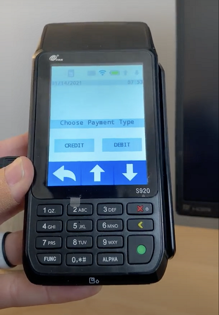

FrameReady Pay
Take live credit card payments from within FrameReady with Fortis!
Fortis Credit Card Processing Overview
-
FrameReady is integrated with Fortis' credit card processing and offers you the option to complete your transactions completely within FrameReady without an external credit card processor.
-
Data from each swipe is automatically entered into FrameReady without any extra steps, saving you time and allowing you to be with your customers instead of your computers.
100% Cloud based
-
"FrameReady Pay powered by Fortis" is now 100% Cloud based. This means that no matter what operating system you are running, there is no app you need to run for the integration—other than FrameReady. All information is passed securely over the Cloud, bypassing any need for any software to be installed as a companion.
Offline Terminal Pay
-
FrameReady Pay now allows you to process a credit card payment—even if your terminal is powered down. When you click the Process CC Transaction button in FrameReady and if your terminal is not on, then FrameReady will direct you to key-in the credit card details in a pop up window and process the payment without the terminal.
Web Payments
-
You can now send your FrameReady customers an email, directly from FrameReady Invoices, containing a link to pay their invoice. Your customers can click the link in their email and make a payment securely over the web in a browser or mobile device. Once the payment has been made, it is recorded back onto the invoice in FrameReady in the payments section. FrameReady also allows you to customize the text of the invoice payment link email.
New Interface
-
FrameReady Pay comes with a new animated interface in FrameReady that shows you the status of the payment processing in real time. This means you can see if there is communication with the terminal, if the terminal is down, the status of the payment while processing and any errors that might come back from the processing gateway.
New Terminal Support
-
FrameReady Pay now supports the use of new terminals that accept Swipe, Chip, Tap, Apple Pay, Google Pay and Samsung Pay. Terminals include the A35, S80, MT30, D210S and S300
Requirements
-
Available in the United States, Canada*, Guam, Bermuda, and Puerto Rico.
-
Compatible with Windows or Mac.
-
Requires an internet connection.
-
Requires FrameReady 14 and FileMaker 2023 or greater.
* Some FrameReady Pay features currently unavailable in Canada.
FrameReady Webinar: Credit Card Processing in FrameReady
YouTube link: https://youtu.be/0grVUS0gmpM
Connecting with Fortis
Preliminary Meeting with Fortis
-
You will have a preliminary meeting with Fortis to discuss setting up your merchant account.
-
Fortis will assess your office set up and decide which PIN pad hardware is needed for CC processing.
-
Once the underwriting and merchant forms are all completed, you will be given an official merchant account for Fortis.
PIN Pad Hardware Shipped
-
Fortis will ship out PIN pad hardware to you.
-
Once PIN pad hardware has been received, you will schedule an onboarding set up meeting with Fortis developers.

Onboarding Meeting with Fortis Developers
-
You will have onboarding meeting with Fortis developers.
-
Developers will set up the PIN pads to connect to your office's local network Wifi or Hardwire.
-
Developers will install Fortis partner software for the PIN pad on any machines that are using a PIN pad. This software called “Paygistix Client” needs to be running on the machine in the background with FrameReady in order for the PIN pad to process payments. Each computer will need a unique User Name in each FileMaker Pro (in Preferences), which needs to match the workstation in the PayGoCC FileMaker file (Data08).
-
Developers from Fortis will enter the client's merchant ID and password into yhe PayGoCC FileMaker file to link your merchant account to the processor and PIN pad.
-
Developers will run a test transaction with PayGoCC to make sure PIN pad, software and PayGoCC FileMaker file are all working in sync with each other and functioning how they should be.
-
Once this has been completed, you will be all set up and ready to go processing payments.
Setup Notes
-
If your setup uses receipt printers with FrameReady and has “Register1” or “Register2" entered as the Username in FileMaker Pro (under Preferences), then Fortis needs to make sure those Usernames are the Workstation fields for PayGoCC. Yes, this will affect the login procedure: FrameReady users will need to manually enter their level, e.g. level2 or level3 each time.
© 2023 Adatasol, Inc.